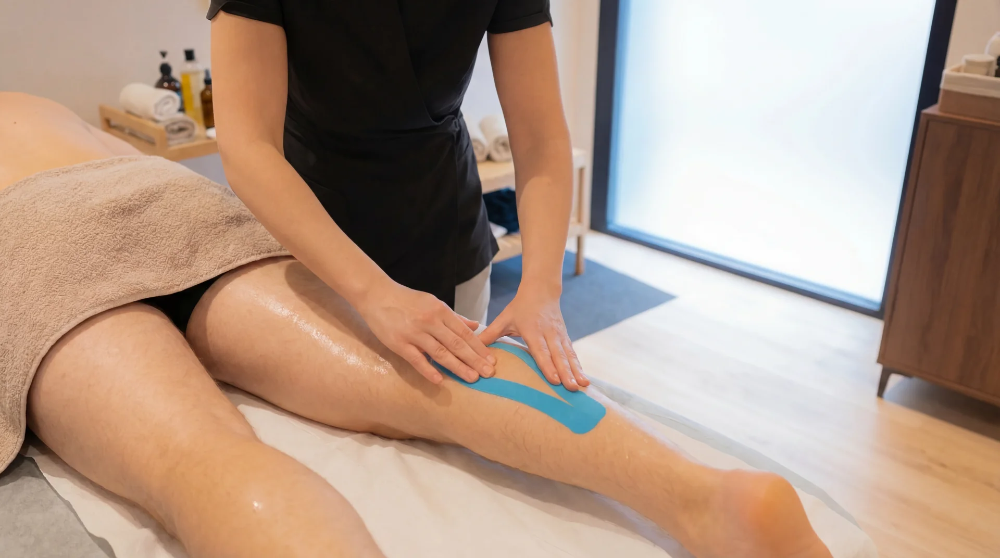
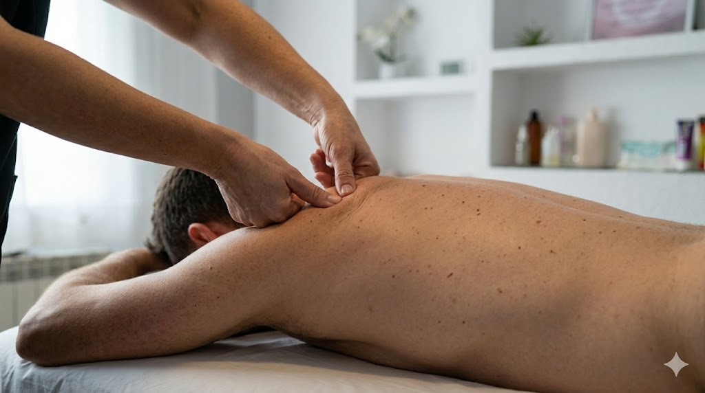
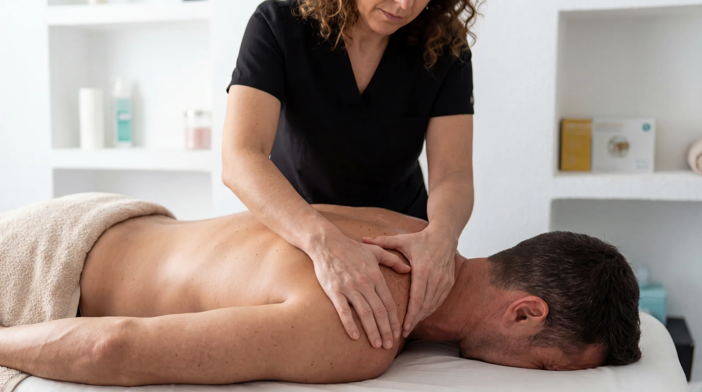
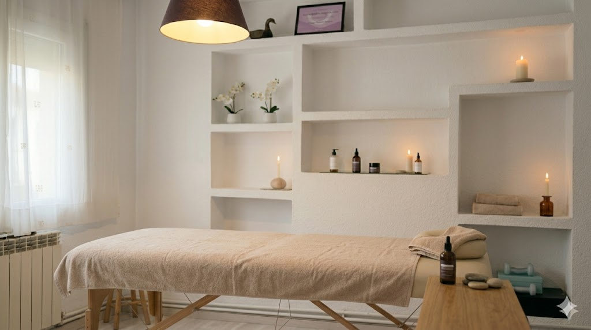

Trato personalizado
Cada sesión se adapta a tu caso y objetivos.
Tratamiento personalizado en Vilanova del Camí.
Cada sesión se adapta a tu caso y objetivos.
Te acompañamos para mantener resultados.
Menos dolor, más movilidad y más energía.
Tratamientos personalizados con explicación clara y enfoque profesional.

Indicado para músculos cargados por entrenamientos o esfuerzo físico. Ayuda a descargar tensión, mejorar la recuperación y reducir la sensación de piernas o espalda pesadas.
Elegir este masaje
Tratamiento enfocado en zonas con dolor o molestia concreta. Se trabaja de forma precisa para aliviar contracturas, ganar movilidad y mejorar tu día a día.
Elegir este masaje
Perfecto cuando notas nudos musculares, rigidez o dolor localizado. Aplicamos presión y técnicas específicas para liberar la zona y recuperar comodidad al moverte.
Elegir este masaje
Sesión suave para bajar el estrés y desconectar. Favorece el descanso, reduce la tensión general y te ayuda a salir con sensación de calma y bienestar.
Elegir este masaje
Técnica manual muy suave para estimular la circulación linfática. Recomendado para retención de líquidos, sensación de hinchazón y piernas cansadas.
Elegir este masaje| Servicio | Objetivo | Recomendado para | |
|---|---|---|---|
| Deportivo | Descarga y recuperación | Deportistas, piernas cargadas | Reservar |
| Terapéutico | Alivio de dolor concreto | Dolor crónico, movilidad reducida | Reservar |
| Descontracturante | Nudos y rigidez | Oficina, estrés, tensión acumulada | Reservar |
| Relajante | Desconectar y calma | Estrés, ansiedad, regalo | Reservar |
| Drenaje linfático | Circulación y deshinchar | Retención de líquidos, piernas pesadas | Reservar |
Elige la opción que mejor se adapte a ti. Los bonos incluyen ahorro y flexibilidad.
Perfecta para probar o para necesidades puntuales.
Para un tratamiento progresivo con seguimiento.
Ideal para mantenimiento regular y máximo ahorro.
Soy Yos, masajista profesional en Vilanova del Camí. Mi objetivo es ayudarte a sentirte mejor de forma real y duradera, con un trato personalizado y un enfoque basado en la escucha activa y el conocimiento del cuerpo.
Cada persona es diferente, y cada sesión se adapta a lo que necesitas en ese momento: aliviar dolor, recuperarte de un esfuerzo, descargar tensión o simplemente desconectar.
Haz clic en la zona del cuerpo que te molesta para ver cómo podemos ayudarte.
← Selecciona una zona del cuerpo
Artículos prácticos para cuidar tu cuerpo en el día a día.

¿Te has torcido el tobillo? Te explicamos qué hacer en las primeras horas, cómo recuperarte correctamente y cuándo es recomendable acudir a un profesional.
Leer artículo →
Rutinas simples de apenas 10 minutos que pueden prevenir contracturas, mejorar tu postura y reducir el dolor de espalda y cuello.
Leer artículo →
Señales que tu cuerpo te envía cuando necesita atención profesional: dolor persistente, rigidez matutina, estrés acumulado o lesiones recurrentes.
Leer artículo →
El sedentarismo es una de las principales causas de dolor lumbar y cervical. Te damos consejos prácticos para mejorar tu ergonomía y reducir molestias.
Leer artículo →Opiniones reales de personas que han confiado en YOS SALUT.
5,0 en Google (6 reseñas) — Ver reseñas →"Llevaba semanas con dolor lumbar y después de dos sesiones noté una mejora increíble. Yos es muy profesional y te explica todo lo que hace. Totalmente recomendable."
"Voy cada 15 días después de entrenar y la diferencia se nota muchísimo. La descarga muscular es brutal, salgo como nuevo. El mejor masajista de la zona."
"Fui por primera vez sin saber qué esperar y me encantó. Te hace sentir muy cómoda, el ambiente es tranquilo y sales super relajada. Ya he repetido tres veces."
"Tenía las piernas muy hinchadas por retención de líquidos y con el drenaje linfático mejoré bastante. Además te da consejos para mantener el efecto en casa."
"Trabajo todo el día sentado y tenía contracturas terribles en cuello y hombros. Yos encontró el punto exacto del problema. Ahora vengo una vez al mes como mantenimiento."
"Le regalé un bono de 3 sesiones a mi madre y está encantada. Dice que es lo mejor que le han regalado en mucho tiempo. Gracias Yos por el trato tan cercano."
Vilanova del Camí · cerca de Igualada
15:00 – 21:00
Lunes a sábado
Con cita previa por WhatsApp.
Carrer Nou, 56
08788 Vilanova del Camí, Barcelona
Cerca de Igualada · Fácil aparcamiento
Cómo llegarWhatsApp o llamada
Sí, trabajamos siempre con cita previa para dedicarte el tiempo que necesitas. Puedes reservar fácilmente por WhatsApp.
Entre 50 y 60 minutos, dependiendo del tipo de masaje y la zona a tratar.
El masaje descontracturante o el terapéutico son los más indicados. Al inicio de la sesión valoramos tu caso para adaptar el tratamiento a tu necesidad.
No necesariamente. Es ideal para cualquier persona con sobrecarga muscular, tensión acumulada o que busque mejorar su recuperación física, practique o no deporte.
Reduce la retención de líquidos, mejora la circulación, alivia piernas cansadas y favorece la eliminación de toxinas. Es una técnica muy suave y relajante.
Por supuesto. Te explicamos todo antes de empezar, adaptamos la presión a tu comodidad y vamos a tu ritmo. La mayoría de nuestros clientes empezaron sin experiencia previa.
Escríbenos por WhatsApp indicando tu disponibilidad y el tipo de masaje que te interesa. Te confirmamos la hora lo antes posible.
Recomendamos beber agua, evitar esfuerzos intensos las primeras horas y descansar. En algunos casos puede aparecer una ligera molestia que desaparece en 24-48h.
Escríbenos por WhatsApp y te confirmamos disponibilidad.
También puedes llamarnos: +34 660 38 53 58